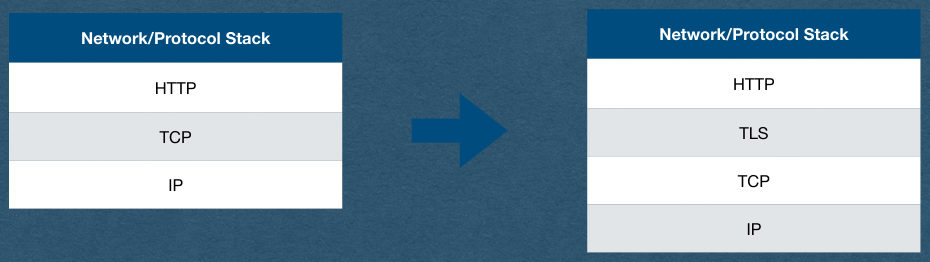
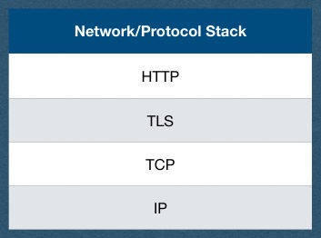

HTTPS
CSE312 — Web Development
Vulnerability
- Man-in-the-middle attack
- The first step in an HTTPS connection:
- Client requests the server's public key
- An attacker controlling a router in one of the networks handling your packets can intercept this request and replace it with their own public key
- Attacker then intercepts all subsequent requests, decrypts them and responds with their responses
- It looks like you're talking to the server..
- Certificate Authorities (CA) can fix that
Certificate Authority (CA)
- A CA is a trusted source with a known public key
- Public key is pre-installed with your OS or your browser (Called a root CA)
- Assume no man-in-the-middle attack during OS and browser installation
- The CA issues certificates for domains and subdomains
- You verify that you control the domain
- Send them your public key (Signed with your private key)
- They send you a certificate
Certificate Authority (CA)
- Certificate includes
- Your public key
- Domain name and CA name
- A cryptographic signature of a hash of the certificate body
- The signature uses the CA's private key so you can verify it with their pre-installed public key that this was in fact issued by the CA
- Man-in-the-middle cannot fake this without the CA's private key!
Certificate Authority (CA)
- Key chain
- Not all CA public keys are pre-installed on your machine
- A CA can have their public key certified by a root CA
- A domain must provide a key chain that leads to a root CA
- Example key chain
- Let's Encrypt certificate is signed by DST Root CA
- Let's Encrypt will sign your certificate
- Your key chain contains your public key signed by Let's Encrypt and Let's Encrypt's certificate is signed by DST
- Your browser starts with it's installed DST cert to verify the chain
- If a cert cannot be verified by a root CA, it is called Self-signed and should not be trusted
Certificate Authority (CA)
- For your project:
- You must obtain and install a valid signed certificate
- There must not be any security warnings given by the browser
Self-Signed Certificate
- A CA will only sign your certificate if you control a domain name
- Buy a domain name and prove to the CA that you control it
- Cannot get a signed cert for "localhost"
- We'll generate our own self-signed certificates for the HW
- For development/educational purposes only!
- When you deploy an app for real users, do not use a self- signed cert!
- These certs cannot be verified and are therefor vulnerable to man-in-the-middle attacks
OpenSSL
- OpenSSL is a very common SSL/TLS library
- Written in C
- Wrappers exist for many languages
- Can be used for many encryption needs
- Generating keys
- Signing certs
- Validating certs
- We'll use OpenSSL in the command line to generate self-signed certificates
Self-Signed Certificate
openssl req -x509 -newkey rsa:4096 -keyout private.key -out cert.pem -days 365 -sha256 -nodes
- This command has many options
- You can adjust the options for your HW if you'd like
- req
- Request a signed certificate
- -x509
- Use the x509 standard format for the certificate
- -newkey rsa:4096
- Generate a new key for this cert using the RSA algorithm and a 4k key size
Self-Signed Certificate
openssl req -x509 -newkey rsa:4096 -keyout private.key -out cert.pem -days 365 -sha256 -nodes
- -keyout private.key
- Save the private key in a file named "private.key"
- -out cert.pem
- Save the public certificate in a file named "cert.pem"
- -days 365
- This certificate will expire in 1 year
- -nodes
- Do not require a password to use the private key
Self-Signed Certificate
openssl req -x509 -newkey rsa:4096 -keyout private.key -out cert.pem -days 365 -sha256 -nodes
- Once SSL is installed (Required on Windows) you can run commands in the command line
- This command will generate a self-signed certificate
Self-Signed Certificate
openssl req -x509 -newkey rsa:4096 -keyout private.key -out cert.pem -days 365 -sha256 -nodes -subj "/C=US"
- If you run the command on the previous slides, you'll be asked a lot of questions
- For most, you can hit enter and leave them blank
- You must enter your country code though (eg. "us")
- Or add -subj "/C=US"
- This lets you set your answers to all the questions
- Required to set country code, and you can leave the rest blank
- Allows you run this command in a script
Installing the Certificate
- Now that we have a certificate, we need to use it in our server to enable TLS
- Could add the cert to our server code directly
- We'll prefer to use a reverse proxy server
HTTPS
- Commonly called HTTP Secure or Secure HTTP
- From a web app development perspective
- HTTPS is the same protocol as HTTP
- We reuse all of our HTTP code
- The difference is that all our requests/responses are encrypted via SSL/TLS
- SSL (Secure Socket Layer) was renamed to TLS (Transport Layer Security) after SSL 3.0
- I'll only refer to the protocol as TLS after this note
TLS
- TLS fits between TCP and HTTP on our protocol stack
- All these protocols are modular
- TCP is not aware that the bytes it's sending are encrypted
- HTTP is not aware that the requests were encrypted or that the responses will be encrypted
Network/Protocol Stack
Network/Protocol Stack
HTTP
HTTP
TCP
TLS
TCP
IP
IP

TLS
- This allows us to continue to use TCP and HTTP
- We only need to add the TLS layer to our web apps to gain encryption
- This will not require any changes to the HTTP side of our servers!
Network/Protocol Stack
HTTP
TLS
TCP
IP

TLS
- What we want:
- Two-way encrypted traffic
- What we have:
- A server with a public/private key pair verified by a CA
- A client could encrypt using the servers public key
- How does the server encrypt responses sent to the client?
TLS Overview
- Client and server negotiate a TLS handshake
- During the handshake, a symmetric encryption key is agreed upon
- Same key encrypts and decrypts
- Client and server both have this key
- All communication in both directions is encrypted with this key
- With this goal in mind, how do a client and server securely agree on this key without an eavesdropper also knowing the key?
Diffie-Hellman Key Exchange
- Client and server agree on a prime number p with a group generator g
- A generator for a prime group means that
- For each value 0 < i < p
- g^i mod p is a unique value
- We say g generates the group since multiplying g by itself p times (mop p) will provide every value 1 to p-1
- Both p and g are public
Diffie-Hellman Key Exchange
- Client and server both generate a random number
- Call the clients number a
- Call the servers number b
- Both a and b are private
- Client and server cannot even share these values with each other
Diffie-Hellman Key Exchange
- Client computes g^a mod p
- Sends this value to the server
- Server raises this value to the power of b mod p
- Server now has g^{ab} mod p
- Server computes g^b mod p
- Sends this value to the client
- Client raises this value to the power of a mod p
- Client now has g^{ab} mod p
Diffie-Hellman Key Exchange
- Client and server now have a shared secret g^{ab} mod p
- This secret is used as a seed to generate a symmetric encryption key
- Or used directly as the key
- The only values containing secret values that were sent over the network were
- And computing a or b from these values involves computing a discrete logarithm which is a cryptographic primitive
Symmetric Key Encryption
- Once the Client and server have a shared symmetric key, they can encrypt all their communication with this key
- The same key encrypts and decrypts
- Typical choice of algorithm is AES (Advanced Encryption Standard)
- Very brief description: AES repeatedly scrambles bytes and XORs them with values generated by the encryption key
- AES does not reduce to a cryptographic primitive
- Theoretical attacks exist, but no known practical attacks
TLS 1.2 Handshake
- Client Hello
- Here are the algorithms I support
- Server Hello
- Here are the algorithms we'll use for this connection
- Server sends its certificate
- Client and server both generate their part of the symmetric key based on the chosen algorithms
- Ex. Generate a and send g^a mod p
- Server signs its portion with the private key from its certificate
- With the partial key received from the client/server, compute the rest of the symmetric key
- Both parties now have the symmetric key and can encrypt/decrypt all following traffic
Forward Secrecy
- Note that the servers keys from its certificate were only used to verify the servers identity during the key exchange
- The encryption of traffic was done with a one-time symmetric key
- A different key is generated for every TLS connection
- Even if an eavesdropper stored all of the encrypted traffic and later stole the servers private key linked to the certificate
- They are still out of luck (Cannot use this private key to find the symmetric key)
- This is called forward secrecy
Algorithms Note
- RSA, Diffie-Hellman Key Exchange, and AES were mentioned as examples
- The algorithms change and evolve over time
- Different servers/clients may support different sets of algorithms over time
- TLS is very flexible and allows for any algorithms to be used, so long as the client and server both agree which ones will be used
- TLS itself does not define how to exchange keys or encrypt and instead defers to the algorithms for details
Privacy Note
- TLS Encrypts the entire HTTP request/response using the symmetric key
- Eavesdroppers can still see TCP/IP headers
- Including source/destination IP addresses!
- They don't know what you're saying, but they know who you're talking to
- This is why VPNs are still popular even though most sites use HTTPS in current year